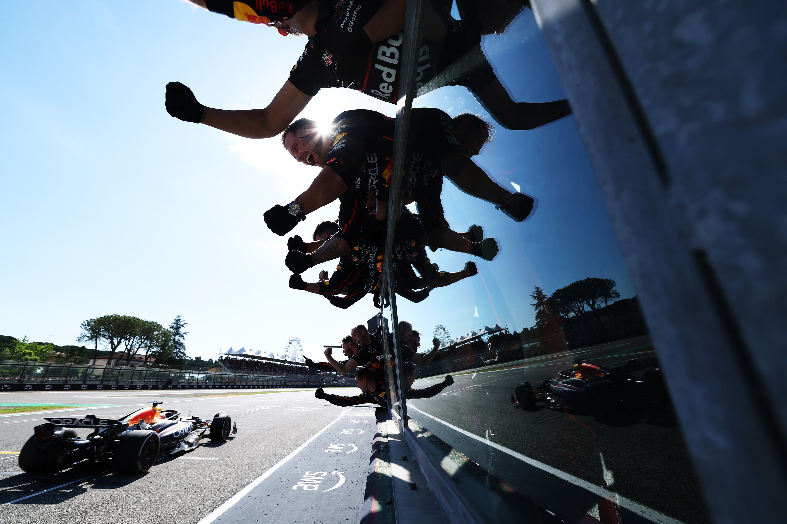
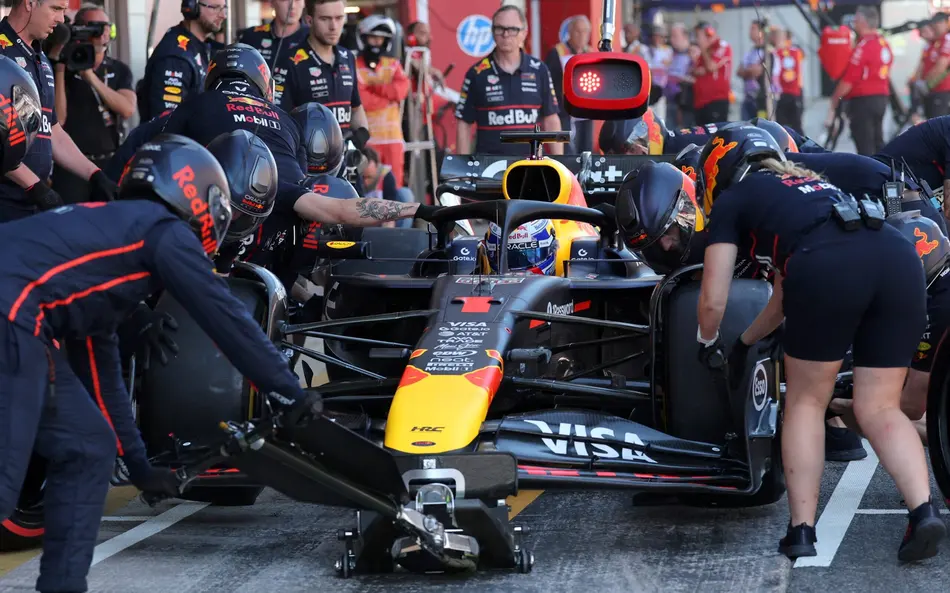
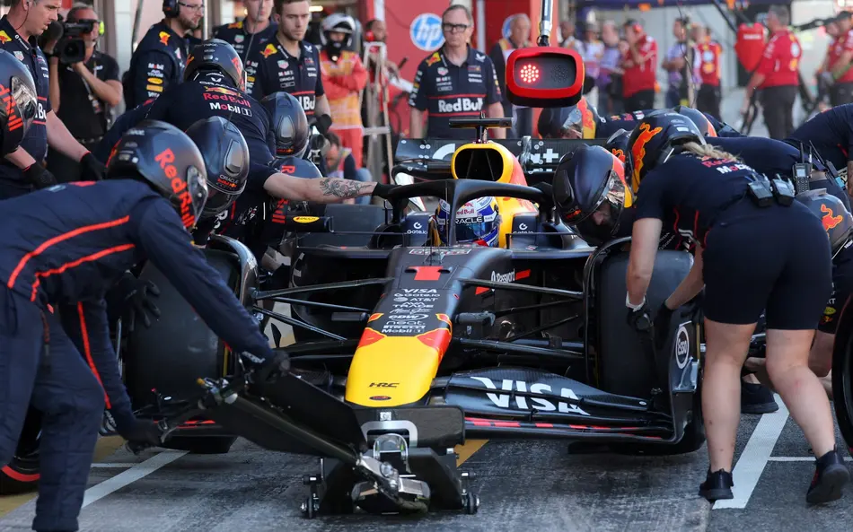
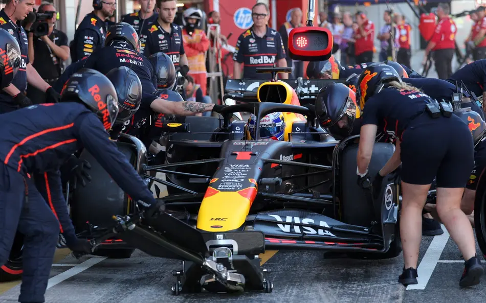

チームの紹介
Red Bull Racingは単なるF1チームではありません。彼らはスピード、革新、挑戦という3つの核を掲げ、F1界に新たなスタンダードを打ち立ててきました。2005年のF1参戦以来、「既成概念にとらわれず、新しい価値を創造する」という理念のもと、伝統あるF1の世界に若くエネルギッシュな風を吹き込みました。
テクノロジーと情熱を融合させること、それがRed Bull Racingの真髄です。最新の空力技術やシミュレーション技術、データ分析を用いた戦略的判断力、そしてドライバーの類まれなる才能。すべてが一体となって「最速のマシンと最強のチーム」を形作っています。彼らの工場は、ただの製造拠点ではなく、“勝利を生む研究所”なのです。
また、Red Bullはリスクを恐れずに前進する文化を大切にしており、時に大胆な戦略変更や若手ドライバーの抜擢を行うことでも知られています。それは「完璧を求める保守性」よりも、「可能性に賭ける積極性」を選び続けてきた結果です。
Red Bull Racingの哲学とは、すなわち「限界を超えること」──技術的にも、人間的にも、常に前へ進み、挑戦し続ける。その姿勢こそが、ファンを魅了し、F1界に刺激を与え続ける理由なのです。

 

